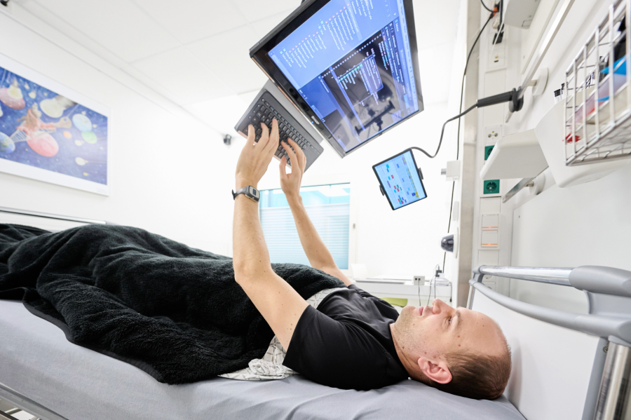

მდებარეობა : კიოლნი, გერმანია დანიშნულება : გერმანიის კოსმოსური სააგენტოს (DLR) აერონავტიკის მედიცინის ინსტიტუტის მიერ მართული envihab (სიტყვების „გარემოს“ და „ჰაბიტატის“ კომბინაცია) სამედიცინო კვლევითი დაწესებულებაა, რომელიც შექმნილია იმის შესასწავლად, თუ როგორ ეგუებიან ადამიანები ექსტრემალურ გარემოს . NASA DLR-თან თანამშრომლობს წოლითი რეჟიმის კვლევებზე, რომლებიც იკვლევს მიკროგრავიტაციის გავლენას ადამიანის ორგანიზმზე. ხანგრძლივობა : წოლითი რეჟიმის კვლევების ხანგრძლივობა ცვალებადია და, როგორც წესი, 30-დან 60 დღემდე გრძელდება. მეცნიერები კვლევის მოხალისეებისგან საბაზისო მონაცემებს აგროვებენ უშუალოდ ტესტირების 30-60-დღიანი წოლითი რეჟიმის ფაზის დაწყებამდე და მის შემდეგ. აღწერა: დედამიწის გრავიტაციის ქვევით მიმართული მიზიდულობის გარეშე, უწონადობაში ლივლივი ორგანიზმს განტვირთავს და მის სითხეებს გადაანაწილებს. მკაცრი წოლითი რეჟიმი იწვევს სხეულის სითხეების იმ ტიპის გადაადგილებას და დეკონდიცირებას, რასაც ასტრონავტები კოსმოსში განიცდიან, რაც დედამიწაზე მყოფ მეცნიერებს საშუალებას აძლევს, პლანეტის დატოვების გარეშე შეისწავლონ კოსმოსური ფრენების ჯანმრთელობაზე ზემოქმედება. :envihab-ზე მეცნიერები ატარებენ წოლითი რეჟიმის კვლევებს, რათა შეაფასონ მიკროგრავიტაციაში ცხოვრების შედეგები ჯანმრთელობაზე და გამოსცადონ პოტენციური ჩარევები — ასევე ცნობილი როგორც კონტრზომები — ასტრონავტების ჯანმრთელობის დასაცავად ასეთ ექსტრემალურ გარემოში. კვლევების დროს მონაწილეები კვირების ან თვეების განმავლობაში წვანან საწოლში ოდნავ დახრილი თავებით. მონაწილეები არაფრისთვის არ სხედან — არც დაბანისთვის, არც ტუალეტის გამოყენებისთვის, არც სხვა მონაწილეებთან კარტის სათამაშოდ და არც ცემინებისთვის! წოლითი რეჟიმის ეს კვლევები მკვლევრებს საშუალებას აძლევს, დააკვირდნენ, თუ როგორ მოქმედებს მიკროგრავიტაციის მსგავს გარემოში ცხოვრება მონაწილეთა ძვლებზე, კუნთებზე, წონასწორობასა და კოორდინაციაზე. წოლითი რეჟიმის კვლევები ასევე შეიძლება გამოყენებულ იქნას მიკროგრავიტაციის დროს ტვინისა და მხედველობის ცვლილებების ჯგუფის ინტერვენციების შესასწავლად და შესამოწმებლად, რომლებსაც ერთობლივად კოსმოსურ ფრენასთან ასოცირებულ ნეირო-თვალის სინდრომს, ანუ SANS-ს უწოდებენ. სპეციფიკაციები: : envihab-ის დაწესებულება ერთ სართულზე რამდენიმე მოდულად იყოფა, სადაც განთავსებულია ადამიანის ცენტრიფუგა, წნევის კამერა, მისაღები ოთახი, სპეციალური მაგნიტურ-რეზონანსული ტომოგრაფია, ფსიქოლოგიური განყოფილება და ბიოლოგიური ლაბორატორია. ის 37 000 კვადრატულ ფუტზე მეტ ფართობს მოიცავს. საწოლები სტანდარტული ზომის საავადმყოფოს საწოლებია და კვლევების დროს თავის ექვსგრადუსიანი დახრით არის დახრილი. მეცნიერები, როგორც წესი, საწოლზე დაწოლის კვლევების თითოეული სერიისთვის 12 მკვლევარი მოხალისისგან შემდგარ ოთხ ჯგუფს იწვევენ.

უახლესი ექსპედიციები
ანალოგური ასტრონავტი ანდრეას ჯოში ფოტოზე გამოსახულია წოლითი რეჟიმის ბოლოდროინდელი კვლევის დროს, სადაც ის თავით ქვემოთ იწვა და 60 დღის განმავლობაში ვერ ჯდებოდა. ის საწოლში წევს და თავზე დამონტაჟებულ კომპიუტერზე ბეჭდავს. კრედიტი: DLR
უახლესი იმპორმაცია

ექსპედიცია 33

სადგურის მეცნიერება 101
გაეცანით ამ გვერდს, რათა გაეცნოთ თქვენს კოსმოსურ სადგურზე შესწავლილი მრავალი სამეცნიერო და ტექნოლოგიური კვლევის საფუძვლებს — ასტროფიზიკიდან დაწყებული წვის მეცნიერებებით, მიკრობიოლოგიითა და სხვა დისციპლინებით დამთავრებული.